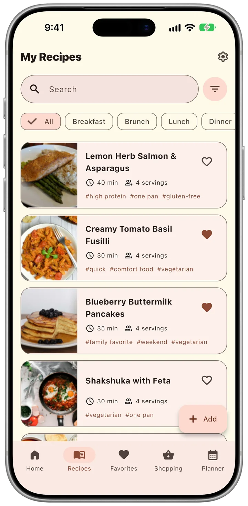
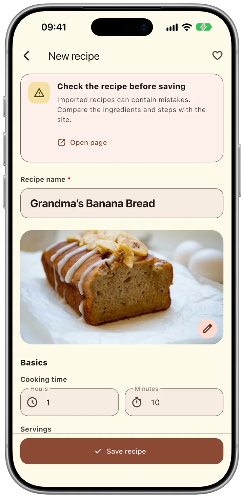
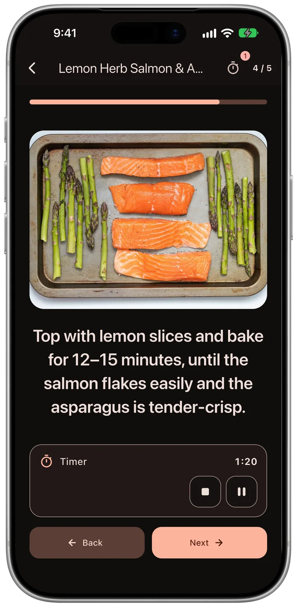
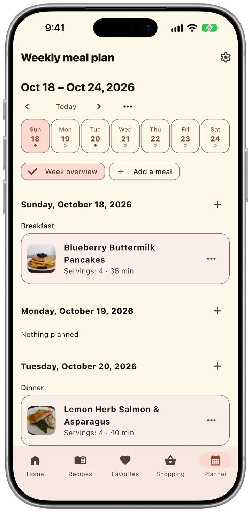
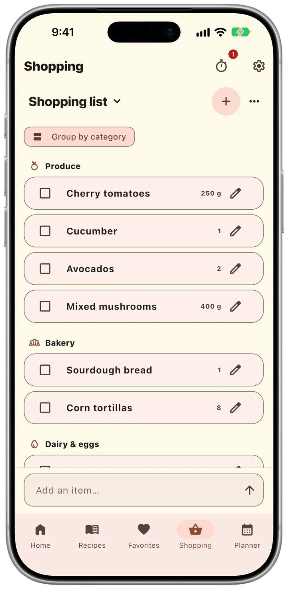

Add and organize recipes
Only a title is required. Add photos, ingredients, steps, meal categories, dish types, tags, notes, and a source whenever you are ready.
Recipe book for iPhone and iPad
Move your recipes out of screenshots and old notebooks into one book on your iPhone, with photos and steps. Paste a link to a recipe page, and TasteKeep fills it in for you.
Free on the App Store.
No account, no subscription.


Import
Paste the address of a recipe page, and TasteKeep fills in the title, photo, ingredients and steps. You check them against the site and save.
Reading a recipe in Safari? Tap Share and choose TasteKeep. A note works too: paste its text.

Cook
Cooking mode shows each step in large type with its photo. Start the timer inside the step and lock the phone: the countdown stays on the Lock Screen and in the Dynamic Island.

Plan Pro
Put recipes on breakfast, lunch and dinner, save a good week as a template and use it again. When the week is set, turn the plan into a shopping list.

Shop Pro
TasteKeep groups the list by store aisle and adds up quantities from your recipes. Keep a list for each store and share it with your family.
You open the app and start. The App Store label reads “Data Not Collected”.
Recipes stay on your device. Turn on iCloud sync, and they reach your iPad through your own Apple Account.
“Our family recipes lived in phone screenshots and a notebook that was falling apart. I made the app I wanted: one private book with photos and steps.”
Free for iPhone and iPad. Pro is a one‑time purchase.
Quick answers for the most common TasteKeep tasks.
Only a title is required. Add photos, ingredients, steps, meal categories, dish types, tags, notes, and a source whenever you are ready.
Open Settings and choose “Create a backup”. Keep the .recipechest file somewhere safe. To bring your recipes back, choose “Restore from file” in Settings.
Camera and photo-library access are optional. TasteKeep asks only after you choose to add a photo to a recipe or cooking step.
Email uladzislau.vyskvarka@icloud.com. Include your device model, iOS version, and a short description of what happened.
Clear by design
Effective October 7, 2026
TasteKeep is designed to keep your recipe collection private. It requires no separate registration, includes no advertising, third-party analytics, or crash-reporting SDK, and does not send your recipes to the developer.
Recipes, ingredients, cooking steps, notes, tags, favorites, shopping lists, meal plans, settings, and copied images are stored locally on your device. Deleting the app may remove this local copy.
Access is requested only after you choose to add a photo. Selected images are copied into the app’s private local storage. If you turn on iCloud sync, recipe and cooking-step photos are also stored as private CloudKit assets in your iCloud account.
On iPhone and iPad, you can turn on iCloud sync in Settings. Recipes, photos, favorites, trash state, shopping lists, meal plans, and templates are then stored in the private CloudKit database associated with your Apple Account. Apple processes this data under the iCloud terms; the TasteKeep developer cannot access your private database. Interface preferences and purchase entitlements are not synchronized. Turning sync off keeps the local collection on your device.
While sync is on, Apple sends the app silent notifications when your recipes change on another device. iCloud sync is not a versioned backup. To keep a copy you can return to, choose “Create a backup” in Settings.
TasteKeep Pro is a one-time in-app purchase. Apple processes the payment through the App Store under its own terms, and the developer does not receive your payment details or contact information. To unlock Pro, the app checks your purchase with the App Store. On a new device, “Restore purchase” on the Pro screen runs the same check.
When you start your first cooking timer, iOS asks whether TasteKeep may send notifications, so the app can tell you when a timer ends. Your device schedules these notifications and runs the Lock Screen timer itself, without a server.
TasteKeep creates or shares a recipe, shopping list, or backup file only after your explicit action. Apple’s system share sheet and the destination you choose may process that file under their own privacy terms.
When you open a recipe’s source link, the page opens in Safari inside the app. That website handles your visit under its own privacy policy.
When you import a recipe from a link, TasteKeep downloads that page, and the photos of the recipe and its steps that it names, from the website to your device, with no server of ours in between. The website receives the request as it would from a browser: your IP address, the page address, the app’s name and your language. It handles that request under its own privacy policy. TasteKeep sends neither the link nor the page to the developer and keeps only the recipe you choose to save.
When you share a page to TasteKeep from Safari or another app, the TasteKeep share extension saves its address on your device. From Safari it also saves a copy of the page as you see it, so TasteKeep reads the recipe without downloading the page again. The copy stays in storage on your device that only TasteKeep and its extension can open. The next time you open TasteKeep, it imports the recipe as it does from a link and deletes the copy. Nothing you share reaches the developer.
When you paste a recipe’s text into TasteKeep, or share text to it from Notes, Mail or another app, TasteKeep reads the recipe on your device. The share extension keeps the text and the note’s first photo in the same storage on your device until TasteKeep makes the recipe and deletes them. Nothing you paste or share reaches the developer.
TasteKeep does not collect, track, sell, or transmit personal data to the developer. It does not use an advertising identifier, analytics SDK, or crash-reporting SDK. Optional iCloud sync communicates directly with Apple CloudKit using your Apple Account.
Apple gives the developer App Store reports with download and sales totals. If you chose to share analytics with app developers in iOS Settings, Apple also includes anonymous crash reports and usage statistics. These reports do not identify you.
TasteKeep does not knowingly collect personal information from children or any other users because it does not operate a developer-controlled data collection service.
If a future version introduces analytics or another external data service, this policy and the App Store privacy disclosure will be updated before that version is released.
For privacy questions or support, email uladzislau.vyskvarka@icloud.com.
Tell us what went wrong and we’ll help you get back to your recipes.
Email TasteKeep support